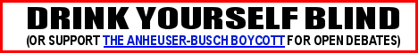

|
| ||||||
| "Sentient Life" | ||||||
|
|
Don't Drink Yourself Blind The current rules for getting a candidate into the presidential debates on T.V. prevents anyone but a Republican and a Democrat from debating. This keeps dissenting views off the air. We're boycotting the sponsors of the debates, including Anheuser-Busch, in order to get the rules changed and third-party candidates into the debate. "Debating the Debates" - An excellent article by Dr. Lenora Fulani, appearing in WorldNet daily Do the presidential debates accurately reflect the views and opinions of all America? I don't think so. Here are some dissenting views that will not be heard under the current system:
You won't hear all of these views in a debate between just a Republican and a Democrat. And yet the American people deserve the chance to hear these views as much as those of the Republican and Democrat candidates.
Who gets to debate?
The choice of candidates who are allowed into the debates are made by the Commission on Presidential Debates, supposedly a "nonprofit, nonpartisan corporation". Why do I say "supposedly"? Because the co-chairmen of the Commission represent only Republicans and Democrats. I believe that this leads to bias in the selection process. The selection criteria for the 2000 debates limits the participants to those who have " a level of support of at least 15% (fifteen percent) of the national electorate as determined by five selected national public opinion polling organizations." What is wrong with this? "One for My Homeys" - Spread the Word! The problem is: how do the American people know who they want to vote for based on the issues the candidates support, if they don't get a chance to hear the issues? It can be argued that everyone has the opportunity to make their position on the issues known. They try. But exposure is very expensive. Having to pay for your own media time, while the Republicans and the Democrats get to air their views for free on the debates, is unfair.
Action to take
What I am asking you to help me achieve is a simple change in the candidate selection criteria. I want the Debate Commission to eliminate the 15% rule. The remaining rules are enough to prevent people who are not serious about the job of President to be excluded. (Mickey Mouse has been written in at the polls in every election in the past few decades. While you think it might be appropriate, really, Mickey Mouse is simply not a viable candidate for president.) It may not seem that one simple change in one little set of rules can make much difference. But it can. Not only in getting other candidates in the debate, but in getting media attention from the boycott itself. Once people hear that others are serious enough about third party candidates to boycott a beer company, they'll think about third parties a little more. Unless you are perfectly happy with the current parties, that will be good news. You can write directly to the Chairmen of the debate commission using the links on the left of this page. But just pleading to the Commission is most likely not enough. That is why we a calling for a boycott of all the coprorations that are sponsoring the debates. Additionally, we are showing the sponsors that their (implied) approval of the Debate Commission's selection process is not okay. Don't buy Anheuser-Busch products, until the Debate Commission eliminates the 15% rule. "Issue blindness" should not be a side-effect of drinking alchohol. |
  ©2000, thx1666 Page created with the MS-IDE text editor All graphics made with Paint Shop Pro 6 |
|||